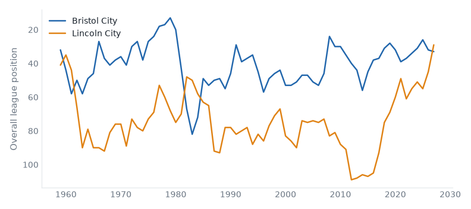

Premier League and Championship, 14 September to 20 September 2026. 3 results.
Bristol City 0–1 Lincoln
Championship, Tue 15 Sep
Lincoln City beat Bristol City for the first time since 1981/82.

| Mon 14 | Leeds | 4–1 | Newcastle | first win v Newcastle United since 2020/21 |
| P | W | D | L | GD | Pts | ||
|---|---|---|---|---|---|---|---|
| 1 | Arsenal | 2 | 2 | 0 | 0 | +4 | 6 |
| 2 | Manchester City | 2 | 2 | 0 | 0 | +2 | 6 |
| 3 | Brighton & Hove Albion | 2 | 1 | 1 | 0 | +4 | 4 |
| 4 | Brentford | 2 | 1 | 1 | 0 | +3 | 4 |
| 5 | Leeds United | 2 | 1 | 1 | 0 | +3 | 4 |
| 6 | Everton | 2 | 1 | 1 | 0 | +2 | 4 |
| 7 | Hull City | 2 | 1 | 1 | 0 | +2 | 4 |
| 8 | Chelsea | 2 | 1 | 1 | 0 | +1 | 4 |
| 9 | Manchester United | 2 | 1 | 0 | 1 | +2 | 3 |
| 10 | Ipswich Town | 2 | 1 | 0 | 1 | -1 | 3 |
| 11 | Sunderland | 2 | 1 | 0 | 1 | -1 | 3 |
| 12 | Bournemouth | 2 | 0 | 2 | 0 | 0 | 2 |
| 13 | Liverpool | 2 | 0 | 2 | 0 | 0 | 2 |
| 14 | Newcastle United | 2 | 0 | 2 | 0 | 0 | 2 |
| 15 | Nottingham Forest | 2 | 0 | 1 | 1 | -1 | 1 |
| 16 | Tottenham Hotspur | 2 | 0 | 1 | 1 | -2 | 1 |
| 17 | Aston Villa | 2 | 0 | 0 | 2 | -2 | 0 |
| 18 | Fulham | 2 | 0 | 0 | 2 | -2 | 0 |
| 19 | Crystal Palace | 2 | 0 | 0 | 2 | -4 | 0 |
| 20 | Coventry City | 2 | 0 | 0 | 2 | -6 | 0 |
| Tue 15 | Bristol City | 0–1 | Lincoln | first win v Bristol City since 1981/82 | |
| Tue 15 | Middlesbrough | 2–2 | Millwall |
| P | W | D | L | GD | Pts | ||
|---|---|---|---|---|---|---|---|
| 1 | Southampton | 4 | 4 | 0 | 0 | +11 | 12 |
| 2 | Middlesbrough | 4 | 3 | 1 | 0 | +4 | 10 |
| 3 | West Ham United | 4 | 3 | 0 | 1 | +10 | 9 |
| 4 | Swansea City | 4 | 2 | 2 | 0 | +4 | 8 |
| 5 | West Bromwich Albion | 4 | 2 | 2 | 0 | +3 | 8 |
| 6 | Charlton Athletic | 4 | 2 | 2 | 0 | +2 | 8 |
| 7 | Watford | 4 | 2 | 1 | 1 | +1 | 7 |
| 8 | Millwall | 3 | 2 | 0 | 1 | +4 | 6 |
| 9 | Stoke City | 3 | 2 | 0 | 1 | +4 | 6 |
| 10 | Norwich City | 3 | 2 | 0 | 1 | +3 | 6 |
| 11 | Blackburn Rovers | 4 | 2 | 0 | 2 | +1 | 6 |
| 12 | Bolton Wanderers | 4 | 2 | 0 | 2 | 0 | 6 |
| 13 | Wolverhampton Wanderers | 2 | 1 | 1 | 0 | +3 | 4 |
| 14 | Queens Park Rangers | 3 | 1 | 1 | 1 | 0 | 4 |
| 15 | Sheffield United | 4 | 1 | 1 | 2 | -2 | 4 |
| 16 | Birmingham City | 3 | 0 | 3 | 0 | 0 | 3 |
| 17 | Cardiff City | 3 | 0 | 3 | 0 | 0 | 3 |
| 18 | Bristol City | 3 | 1 | 0 | 2 | -2 | 3 |
| 19 | Portsmouth | 3 | 1 | 0 | 2 | -2 | 3 |
| 20 | Preston North End | 4 | 1 | 0 | 3 | -4 | 3 |
| 21 | Burnley | 3 | 0 | 2 | 1 | -1 | 2 |
| 22 | Wrexham | 3 | 0 | 2 | 1 | -1 | 2 |
| 23 | Lincoln City | 3 | 0 | 2 | 1 | -2 | 2 |
| 24 | Derby County | 4 | 0 | 1 | 3 | -5 | 1 |
Built from the English football database, tiers 1–5 from 1958/59. Results from football-data.co.uk. Archived copy.